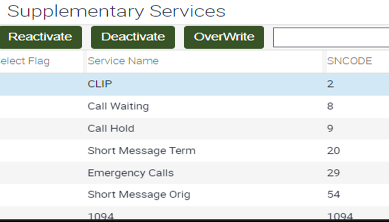

Conference Calling
Basic Information
No. | Index |
|---|---|
1 | Guidelines |
`2 | |
3 | 3.1 Service Fees |
4 | 4.1 Adding Conference Calling service 4.2 Deleting Conference Calling service 4.3 How is a conference call making 4.4 How To make a Conference Call through GSM codes |
5 | |
6 |
1. Guidelines |
|---|
- Enables Orange’s standard Star customer only to engage up to 6 parties in one call (including the initiator), all the parties in a conference call will be connected together through the party initiating the call.
- Charges will appear in the invoice as if customers are making separate calls, i.e. it will not be identified separately on the bill as a conference call.
- Conference Calling service is currently On Hold for FREEmax.
- Conference calling service will be added as a default service for FREEmax new profiles. (On hold)
- Conference call can be made to a fixed phone, any mobile, or a mixture of both.
- Each member within the conference will be able to hear a beep after pass of 1 minute on his/her counter. Customers can make a Conference call when roaming if the Hosting Network supports that and if they have the International & Roaming service.
- If the customer has roaming service, the charge of Conference Call is at the normal per minute rate of roaming.
- Not all the handsets have the option of Conference calls; some can support Conference calling by using GSM codes.
- A maximum of 6 customers can engage in one conference call including the initiator.
- Monthly fee of 15 EGP will be added to the subscriber's invoice.
- One month in advance will be added to customer's bill upon subscription.
- Customer can make conference call to Orange, Vodafone, Etisalat,WE, international and fixed dial.
- The conference call can support up to 6 members (initiator + 5 members).
- Charges will be according to the number of calls initiated by the subscriber according to his/her tariff base.
- Call charges will be deducted from customer's credit on the spot.
- Calls will be disconnected in case customer's credit finished during the conference call.
- Customer must have a minimum of EGP 3 credit to initiate a conference call.
- To connect or include more than one member to the same conference call at the same time, subscriber must have at least EGP 3 in his/her credit per member.
- Example: Initiator calls 1st member & then initiates 2nd call minimum credit must be EGP 3, however if the initiator will call another 3rd member to join the conference call, s/he must have minimum of 6 EGP (EGP 3/Member on conference).
- Subscriber will not be charged for the call s/he receives.
- C&C Subscribers will not be able to add conference call service for onetime fee.
- Customer will be charged with the normal minute rate upon his/her profile.
- Conference call cannot be completed in case of no or insufficient credit.
- The conference call will be dropped when initiator is out of credit.
- If the customer has roaming service, the charge of Conference Call is at the normal per minute rate of roaming.
- Subscriber will not be charged for the call s/he receives.
- For the tariffs that the service is charged normally with its fees.
- In case of deletion, the month in advance will be refunded to the customer. (not to be used for C&C tariffs)
- In case of addition, the month in advance will be posted on the customer (charging on customer).
- Conference Service for Al kart customers starting from 03/ /2011 (service is on HOLD till further notice):
- Control tariff will follow same prepaid tariffs behavior in conference service except for FREEmax new profiles (on hold).
- The conference call will be displayed as a normal call on Seibel.
- Number of participants will be 6 participants (initiator + 5 members).
- The international numbers are eligible for Conference Calls.
- Conference call can be made to a fixed phone, any mobile, or a mixture of both.
- The Conference call feature will not be available for the below profiles:
- MobiChat.
- El Kol Students
- Ahsan Nas
Common Asked Questions
2. Scripts |
|---|
Qs | As |
|---|---|
Generic Seript | خدمة
المؤتمرات من خلالها حضرتك تقدر تتكلم مع أكثر من شخص فى نفس الوقت بمعنى أن ,لو
حضرتك عندك الخدمة ممكن شخص يتصل بحضرتك دلوقتى أو حضرتك تتصل بشخص و تقدر تخليه
يشترك في المكالمة معانا بحد أقصى 5 أطراف على المكالمة و حضرتك بتكون السادس |
What is the conference calling service? | The conference calling service
enables Orange's post-paid subscribers to engage up to 6 parties in one call
(including the initiator), |
Who are the target customers of the conference calling service? | The conference calling service is only provided to Orange's post-paid subscribers. |
Can a subscriber make a conference call to a fixed phone? | Of course you can make a conference
call to a fixed phone, |
How is a conference call made? | From your handset, the Conference
Calling member will initiate calls or will gather incoming calls or a
mixture. You call a party, put it on hold, then call the second party and
select conference option. |
Does the conference calling service require a connection fee? | The conference calling service doesn't require any connection fees. |
Is there a monthly fee for the conference calling service? | There is a EGP 15 monthly fees for
the conference calling service, |
How is a conference call charged? | Each conference member will be charged for the calls he/she initiates according to the regular tariffs based on his/her tariff structure and the destination he/she is calling. |
Will the conference call be identified on my bill? And How? | Conference calls will not be identified on your bill, i.e. the outgoing calls in a conference call will appear in the bill as normal calls. |
Can I make a conference call when roaming? How much would it cost me? | Sir/Madam, of course you can make a conference call when roaming if the hosting network supports the same feature. Each call in the conference call will be charged separately at the normal per minute rate of roaming. |
If I am the originator of the
conference call, can I put the called parties on conference, | When you hang up, the conference call will be ended. |
Sir/Madam, when you hang up, the conference call will be ended. | The calling party that called you will be charged only of the per-minute-rate of his/her call. |
Does the conference calling service work with any handset? | It depends on the handset you are using, it has to support this feature. |
How many calls can I originate, receive and put on conference? | You can engage up to 5 other called parties either in one conference call either by calling them or receiving calls from them. |
How do I activate the service ? | To activate the conference-calling
feature you are kindly requested to call 110 and request the service and it
will be activated to you right away. |
How to Pay
3. How to Pay |
|---|
- No connection fees are required
- Monthly fee of EGP 15 for all tariffs except the below for FREE:
- All Star Buckets (Postpaid Only).
- Eagle Tariffs
- Premier Tariffs
- Demo Lines except (New Demo C&C tariffs)
- All Business Buckets (Postpaid and Mix).
- Starting bill cycle 8/12/2016 , the proration of the subscription will be removed for both Consumer & Enterprise markets
- Customers who subscribed/unsubscribe during the BC will pay full service fees amount.
- Charges will be according to the number of calls the customer initiated according to his/her tariff base, i.e. he/she will not be charged for the call he/she receives.
- Customers on Buckets who'll request to add the conference call service after 23rd May will not be charged for any monthly fee, while Customers already having the conference call active, will be charged with part of the fee (just on their next bill cycle) because of service pro-ration.
- Starting from 30/4/2010 conference calling will be free of charge for business Mix rate plan.
How to Manage My Account
4. How to Manage My Account |
|---|
4.1 Adding Conference Calling service
- The Customer calls 110, or visits any Orange shop to request adding Conference Calling service.
- The Customer Service representative adds the service from Siebel and advises the customer that the monthly fees will appear in the next bill.
- The Customer calls 110, or visits any Orange shop to request deleting Conference Calling service.
- The Customer Service representative deactivates the service from Siebel and advises the customer that the monthly fees will disappear from the next bill.
- The conference-calling member originates calls, receives incoming calls, or does a mixture of both.
- The originator of the conference calls a party, puts him on hold then calls another party and selects conference options. If a third party calls the conference-calling member, he could put the first and second parties on hold (they can still hear each other) and answers the third calling party then selects the conference option so that the four of them are on conference and so on….
- In case the conference call initiator wants to invite more people to the conference (max. of 5 can be added to the initiator), step 2 should then be followed.
- The conference call ends as soon as the initiator of the conference ends the call.
- If any of the parties would like to leave the conference, he should hang up.
- In case some handsets' menus do not support the Conference Calling service, we can try using the following GSM codes manually:
- Make a call.
- Press 2 then Ok to hold the first call then dial the second number.
- Once you are connected to the second party, press 3 then Ok to make the conference.
- To invite another party to the conference, press 2 then Ok to hold the first two parties (they can still hear each other) then dial the third number, press 3 then ok to engage them together.
- To invite other parties to the conference, follow steps 2 & 3.
- If any of the parties would like to leave the conference, he should hang up.
- If the initiator of the conference hangs up (by pressing 1 then OK), all other parties will be disconnected.
- Normal process shall be followed in case C&C customer requested to add/delete the conference call service.
- The service could be added through 110 call center or in case customer visits the shop national sales rep will create same below SR.
- The service can't be added through USSD.
- In case customer insists to delete the service CCR will delete it normally from Siebel.
5. How to Complain |
|---|
- The phone does not support Conference Call (No Conference in phone menu).
- Trouble Shooting Steps:
- The customer should dial the other number then press OK, and press 3 then OK to make the conference
- Or must use digits way (2 then OK to put the active call on Hold , then make the other call and press 3 then OK to make the conference)
- Conference calling is not working “Handset problem".
- Message displayed is: "Request Rejected “OR “Not allowed “, when the customer chooses Conference from the phone menu.
- Trouble Shooting Steps:
- The customer should try digits way as it could be a handset problem.
- then OK to put the active call on Hold, then make the other call and press 3 then OK to make the conference.)
- The initiator is trying to add a seventh call to the conference while the maximum conference actions must be 6 including the initiator.
- Restart the handset, and then try again.
- In case of receiving customer can’t use Conference Calling service accordingly agent should check if s/he has “Call hold” service as a troubleshooting step.
- Noting that, this action can be taken for Consumer postpaid dials only.

Siebel
6. Siebel |
|---|
Short Codes | Type | Area | Product |
|---|---|---|---|
1054 | Request For Info VAS | Features | Conference Calling |
11102 | Acc Mod for Vas | Add | Conference Calling |
11119 | Acc Mod for Vas | Delete | Conference Calling |
31409 | Fault For VAS | Cannot Make And Receive Call | Conference Calling |
Sections with no data: Valid For Product(s), How to Complain, Related Offers, Work Instructions, Related Links